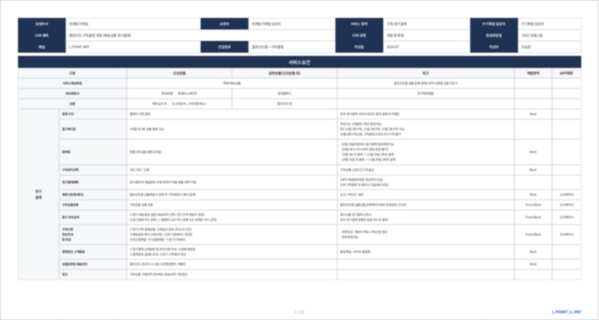
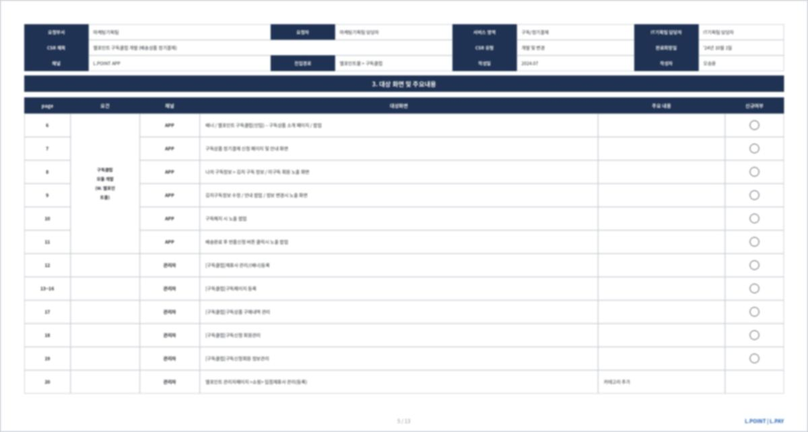
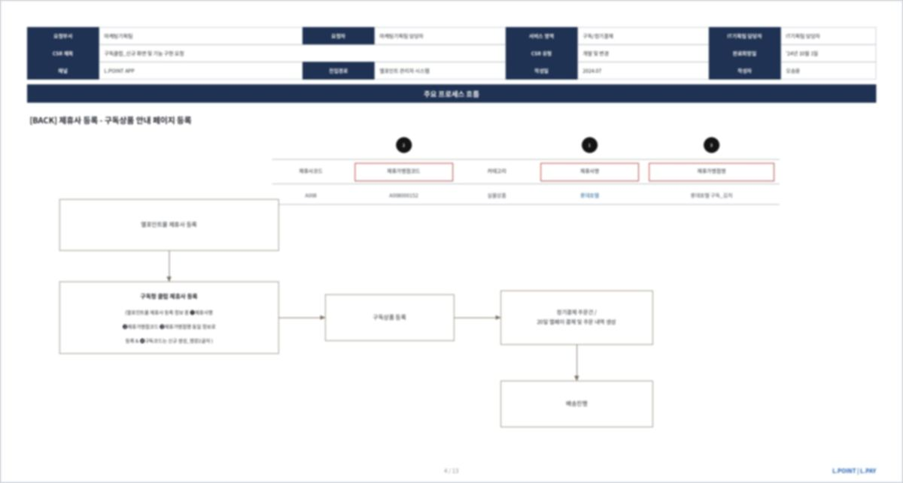
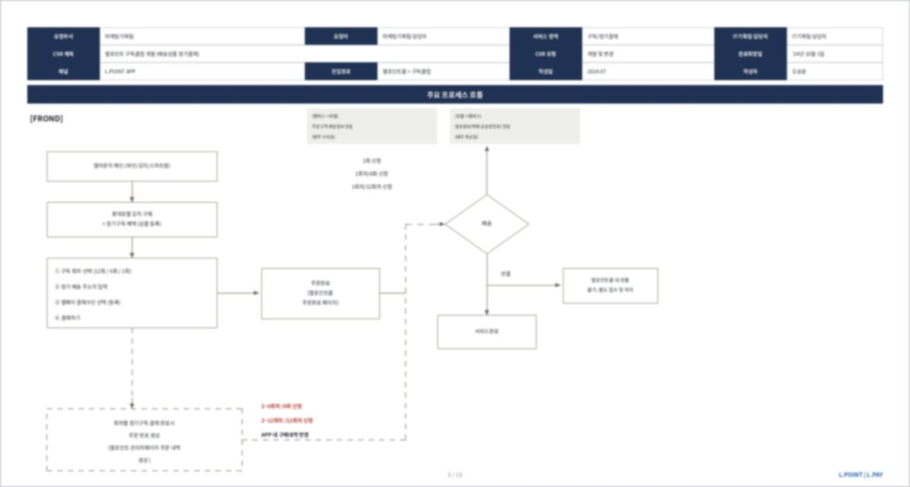
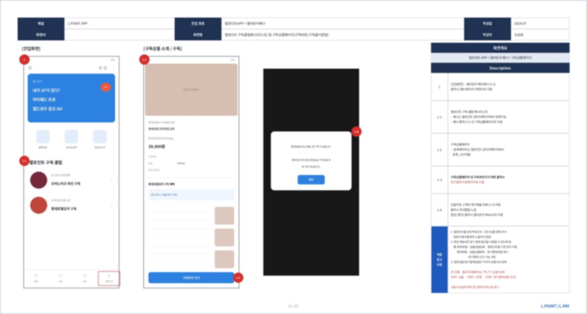
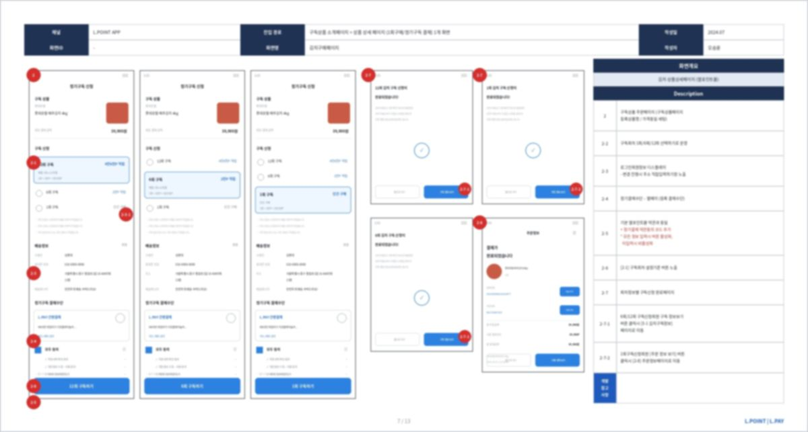
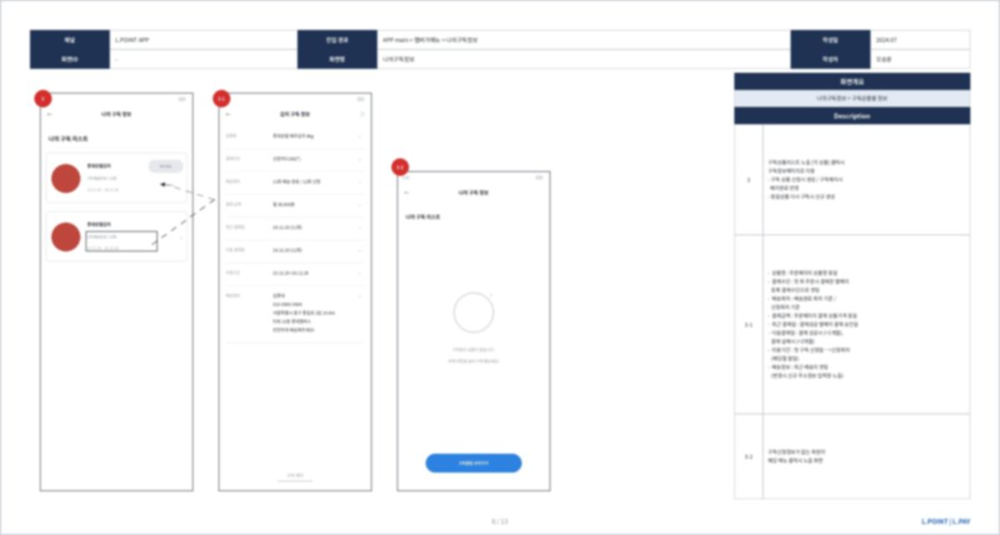
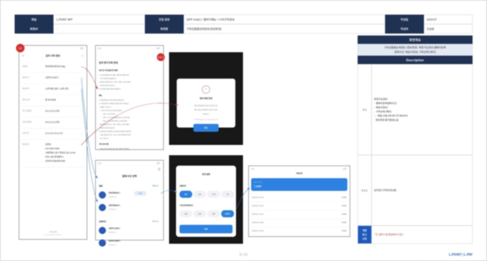
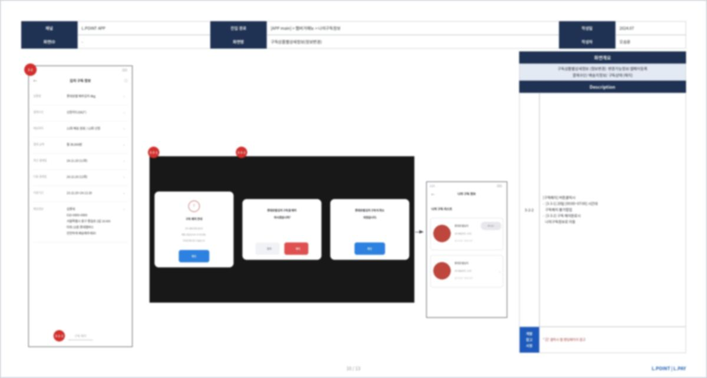

롯데멤버스
L.POINT 구독클럽 구축 및 운영
포인트만 받고 나가는 앱이었고, MAU는 매년 5% 이상 줄고 있었습니다. 매출이 아니라 방문·유지를 성공 기준으로 정의하고, 정기결제 전용 개발 없이 기존 결제 모듈을 재활용해 구독 서비스를 열었습니다.
맡은 범위
문제 — 포인트만 받고 나가는 앱
L.POINT 앱은 계열사 혜택과 상품을 모아 보여주는 앱을 지향했지만, 실제 방문 동기는 포인트 하나에 머물러 있었습니다. 받으러 들어왔다가 받고 나면 나가는 앱테크 성격이 강했고, MAU는 매년 5% 이상 감소하고 있었습니다.
그룹 계열사는 상품과 혜택을 많이 가지고 있었습니다. 그런데 그것을 앱 안에서 지속적인 방문 동기로 연결하는 구조가 없었습니다. 여러 아이디어를 검토한 끝에 그룹사 상품 기반 구독이 채택됐습니다.
결정 ① 성공을 무엇으로 판단할 것인가
결정 ② 개발 리소스가 없을 때 무엇을 포기할 것인가
② 기능을 줄여서 구독이라 부르기 어려운 형태로 연다
③ 기존 모듈을 재활용하고, 시스템으로 못 만드는 부분은 사람이 한다


결제일 로직 — 예외가 실제 일입니다
정기결제는 결제 자체보다 언제까지 바꿀 수 있고, 실패하면 어떻게 되는지가 일의 대부분입니다. 이 구간이 비어 있으면 전부 고객센터 문의로 돌아옵니다.
결제일보다 변경 마감선과 실패 시 되돌림을 먼저 정했습니다. 여기가 비면 고객은 바꿀 수 없고 운영은 수기로 막게 됩니다.
제휴사마다 다른 조건을 하나의 틀로
상품·배송·회차 정책이 제휴사마다 달랐습니다. 상품을 추가할 때마다 조건이 바뀌면 매번 새 프로젝트가 됩니다.
정기결제 서비스 요건서로 등록·결제·배송·해지 기준을 표준화했습니다. 엘포인트몰 제휴사 등록 → 구독 제휴사(배너) 등록 및 구독코드 생성 → 구독 전용 상품 등록의 순서를 고정해, 신규 상품을 같은 절차로 태울 수 있게 했습니다.


화면 설계
구독은 사는 순간보다 사고 난 다음이 깁니다. 지금 몇 회차인지, 다음에 언제 빠져나가는지, 그만두려면 어디를 눌러야 하는지가 보이지 않으면 고객은 결제일마다 불안해집니다.
그래서 신청 화면만큼 조회·변경·해지 화면에 비중을 뒀습니다. 해지는 특히 막지 않고 명확하게 만들었습니다. 막아서 남긴 구독은 다음 달에 민원이 됩니다.





보안을 위해 본문은 흐림 처리했습니다. 문서의 구성과 작성 범위를 보여드리기 위한 자료입니다.
성과와 배움
구독 서비스 4개를 오픈·운영했습니다. 롯데호텔 김치, 롯데웰푸드 과자·생빵, 어반그린 샐러드 채소, 와인 구독입니다. 매년 감소하던 L.POINT 앱 MAU의 감소세를 둔화시키고 유지하는 데 기여했고, 수익이 아닌 트래픽 방어라는 설계 목적을 지표로 달성했습니다.
신규 구독 상품을 같은 틀로 온보딩할 수 있는 반복 가능한 구독 운영 구조가 정착됐습니다.
지표는 목적을 따라 설계해야 합니다. 수익 대신 방문·유지를 성공 기준으로 정의하고 이해관계자와 합의한 것이 프로젝트 내내 의사결정의 기준이 됐습니다. 마진을 포기하는 대신 혜택을 전액 포인트로 환원할 수 있었던 것도 그 합의 덕분입니다.
제약은 프로세스로 풀 수 있습니다. 개발 리소스가 없다고 오픈을 미루는 대신, 기존 모듈 재활용과 수기 운영 절차 문서화로 일정을 지켰습니다. 완벽한 시스템보다 작동하는 서비스를 먼저 만드는 선택이었습니다.
표준을 만들면 확장이 쉬워집니다. 첫 상품에서 서비스 요건을 표준화해둔 덕분에 이후 과자·채소·와인 구독을 같은 틀로 온보딩할 수 있었습니다.
남은 과제 — 수기 운영의 부채는 인지하고 관리 중입니다. 현재 자동화 고도화와 신규 와인 구독 기획·개발을 병행하고 있습니다.